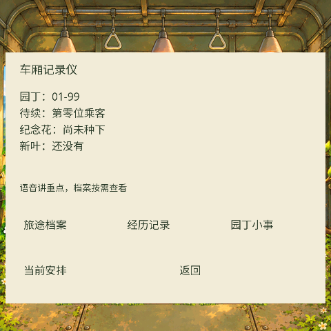

未完成的旅程
V4.6 · 剧情、生活与经营联动
下方流程来自真实游戏核心和机器人位置控制的自动回放，测试脚本代玩家逐次作出选择；不是实际语音录制，也不承诺真人能在相同时间完成。画面使用原生界面渲染截图。
新增纪念花
同一花盆、同一尺寸、四个成长状态。一次投入水2，不占经营位，无资源产出；设备图像总计21.5KiB。
设备界面
重要发现先通讯邀请；原文按需打开，默认安静阅读。显示过、主动关注、实际讨论分别记录。

车厢记录仪
当前安排、旅途档案、经历记录与园丁小事分开查看。
本地已验证完整剧情分支、存档、费用、实际生活到达、档案分页与中文字形；设备实测和云端人设同步仍需连接设备、解锁电脑并登录小智后台。此页面不会控制设备，也不会批准任何方案。